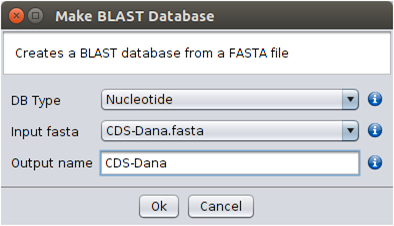

In order to be able to perform BLAST searches, FASTA files must be formatted. This can be achieved by using either the Make Blast database option under Operations or by double clicking the right mouse button on top of the selected FASTA file. The user must specify the database type (DB Type), the FASTA file to be used (Input fasta) and the name of the database to be created (Output name).

Make Blast database